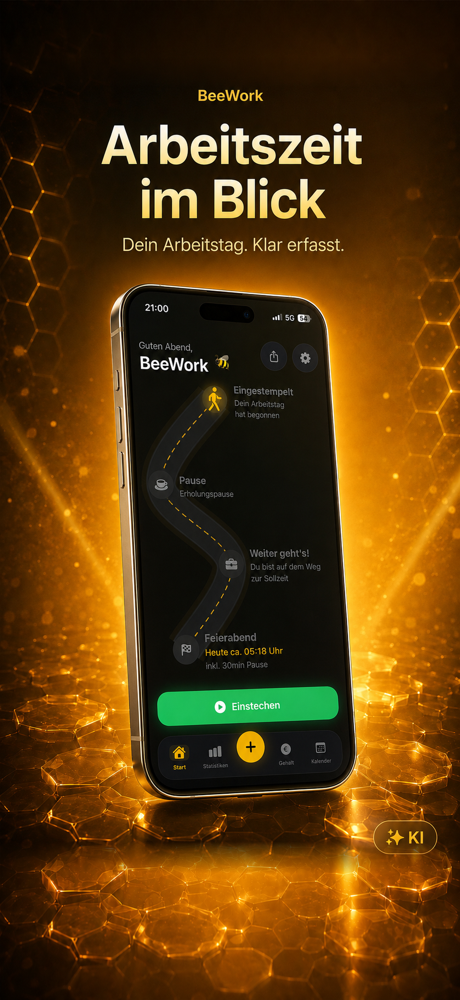
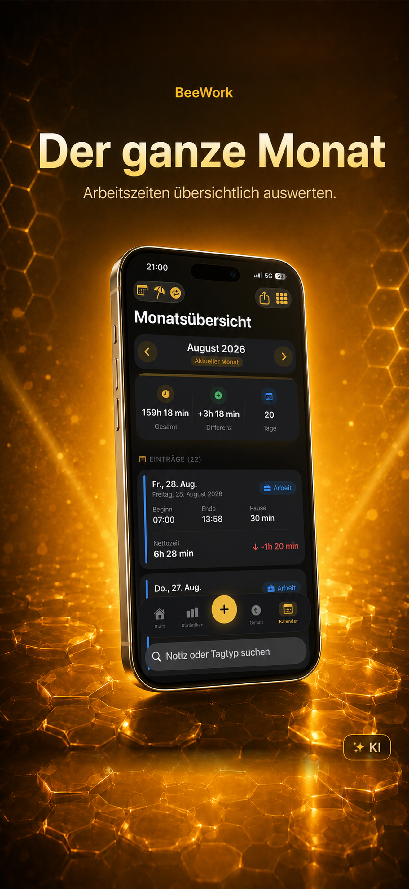
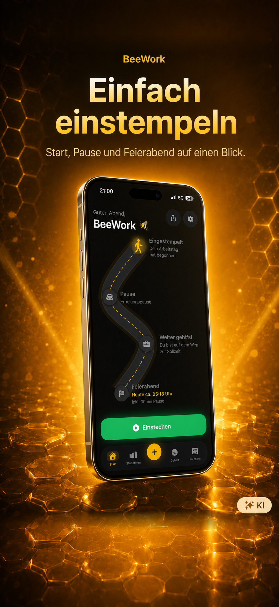
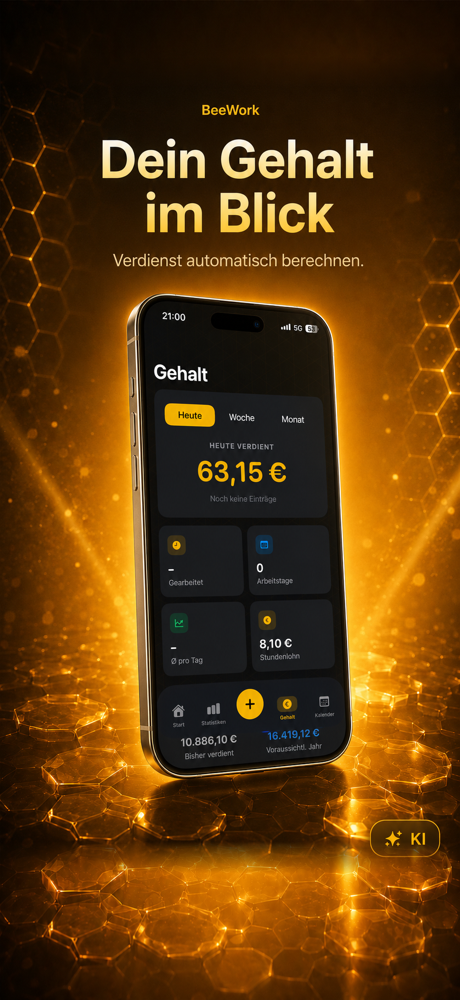
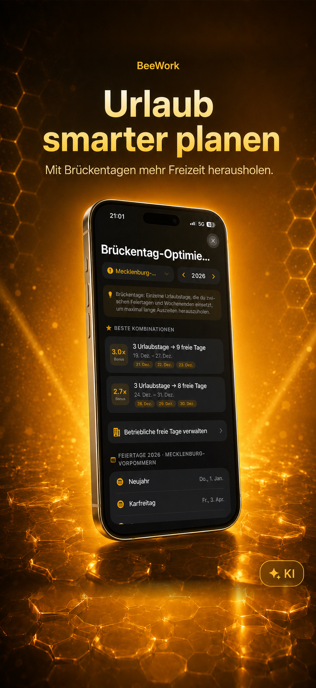
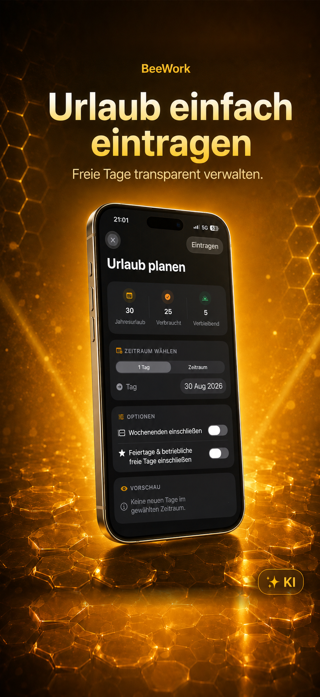
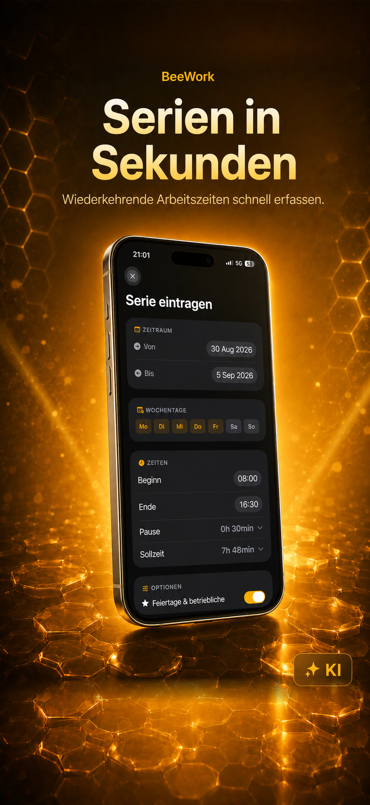
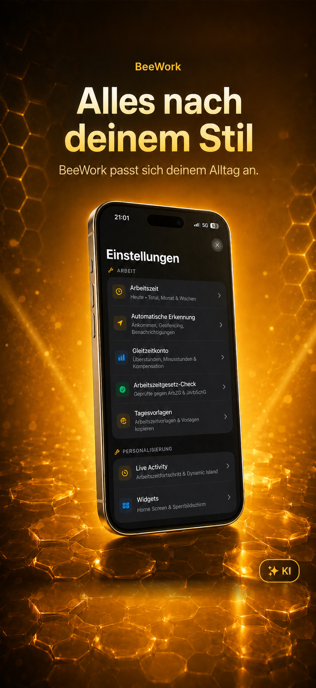
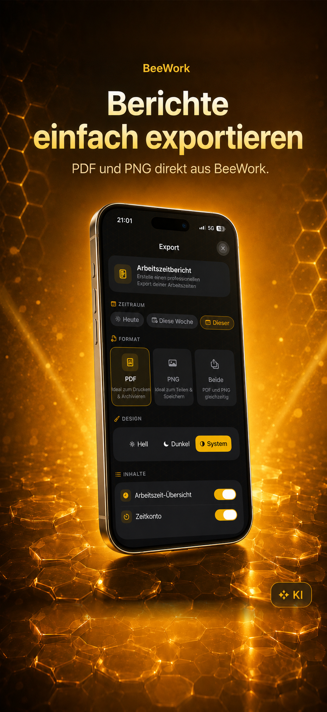
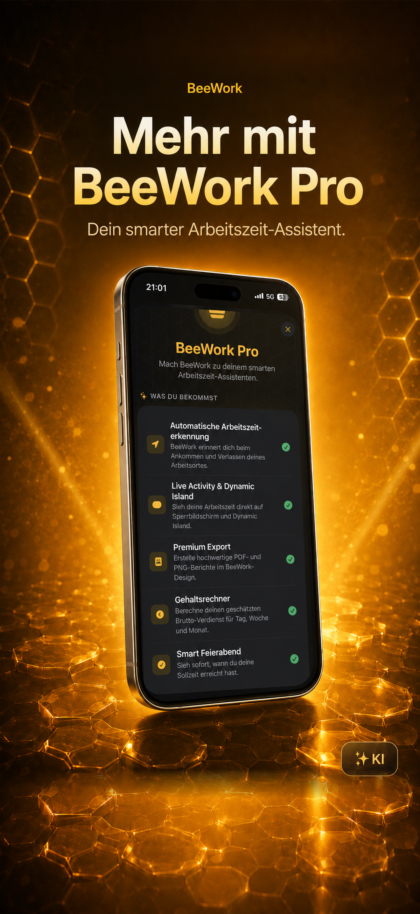

Live-Zeiterfassung
Sekundengenau ein- und ausstempeln – mit mehreren Arbeitsblöcken und Aktivitäten pro Tag.
BeeWork App
Der native Arbeitszeit- und Gleitzeit-Tracker für iPhone, iPad und Apple Watch – von der ersten Minute bis zum Feierabend.


Sollzeit, Zeitkonto und dein voraussichtlicher Feierabend in einem klaren Ablauf.
BeeWork bündelt den Arbeitstag in einem ruhigen, verständlichen Ablauf.
Sekundengenau ein- und ausstempeln – mit mehreren Arbeitsblöcken und Aktivitäten pro Tag.
Sollzeit, Ist-Zeit und Saldo bleiben für Tag, Woche und Monat sofort sichtbar.
Sieh, wann deine tägliche Sollarbeitszeit erreicht ist – inklusive Gleitzeit.
Arbeitsorte per Karte festlegen und beim Ankommen oder Gehen intelligent erinnert werden.
Widgets, Live Activities und Dynamic Island zeigen den laufenden Arbeitstag genau dort, wo du ihn brauchst.
Dein Status bleibt synchron – und Ein- oder Ausstempeln funktioniert auch per Kurzbefehlen.
Einblicke in Arbeitszeit, Gehalt, Urlaubsplanung und die weiteren Werkzeuge der App.








Die wichtigsten Werkzeuge bleiben genau dort, wo sie im Alltag helfen.
Mehr Automatisierung, tiefere Auswertungen und unbegrenzte Historie.
Im App Store
Flexibel abonnieren.
Im App Store
Für den langfristigen Überblick.
Im App Store
Einmaliger Kauf, sofern verfügbar.
Aktuelle Preise und verfügbare Optionen werden direkt im App Store angezeigt.
Der App-Store-Link wird ergänzt, sobald BeeWork verfügbar ist.
Deine Daten bleiben lokal auf deinem Gerät oder werden über iCloud synchronisiert.
Kurze Antworten zu BeeWork.
BeeWork ist für iPhone und iPad ausgelegt und besitzt zusätzlich eine Apple-Watch-App. Eine eigenständige macOS-App gibt es nicht.
BeeWork berechnet aus Sollzeit, erfasster Zeit, Pausen und auf Wunsch dem Gleitzeit- oder Wochensaldo einen voraussichtlichen Feierabend.
Ja. Pausen fließen in die Berechnung ein; BeeWork berücksichtigt dabei auch die Regeln des deutschen Arbeitszeitgesetzes.
Ja. Über Core Location und Geofencing kann BeeWork an das Einstempeln erinnern oder nach einer Bestätigung die Zeiterfassung starten.
BeeWork unterstützt Deutsch und Englisch. Die Sprache kann direkt in der App gewechselt werden.